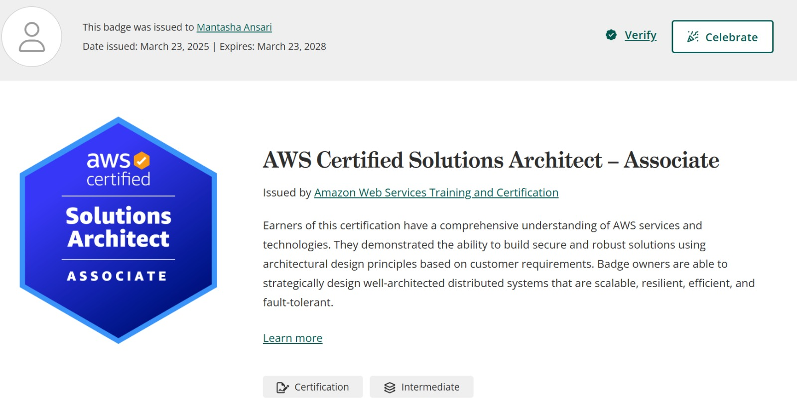
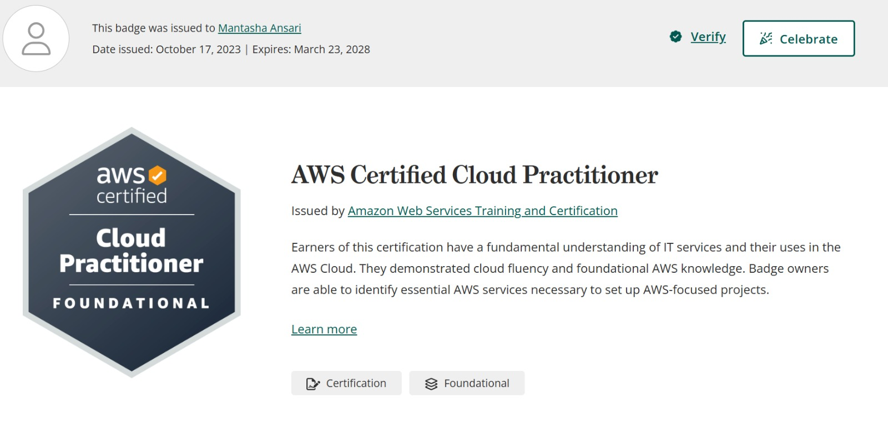
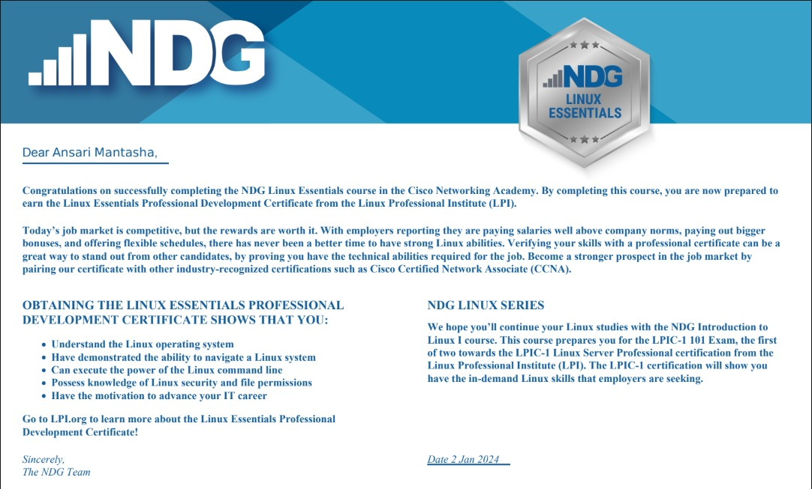
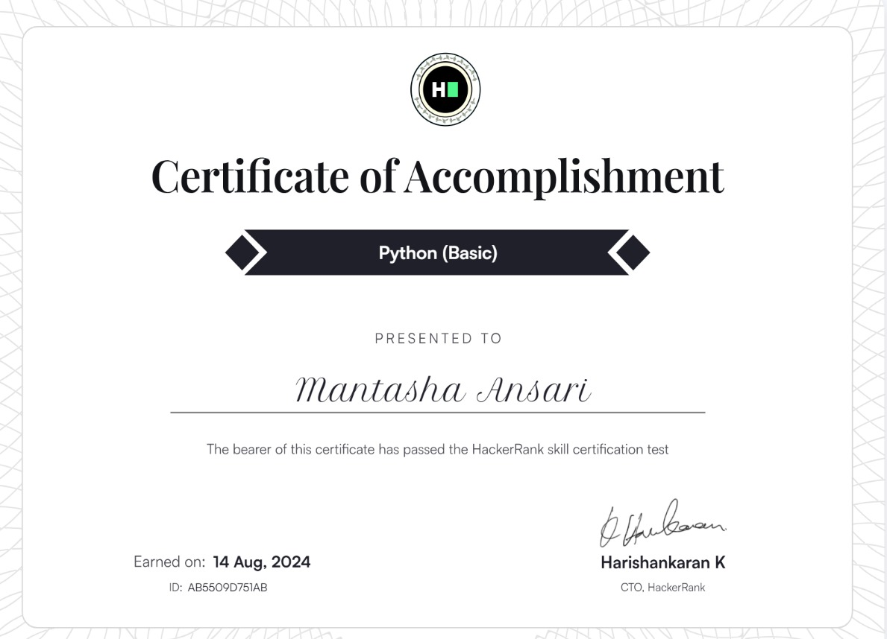

Empowering the next generation of Cloud and Devops Engineers. Engineer at IT VEDANT & ex-Jetking, mentoring 200+ students in AWS, Azure, DevOps pipelines and real-world cloud infrastructure.
I'm Ansari Mantasha — a Cloud & DevOps Engineer with a passion for simplifying complex infrastructure into practical knowledge.
As a Trainer at IT VEDANT and formerly at Jetking, I've guided 200+ students through the cloud ecosystem — from AWS and Azure to Docker, Kubernetes, Terraform, Jenkins, and CI/CD pipelines. I believe in learning by doing, and every session I run is hands-on.
Beyond training, I co-founded a stock trading education startup and mentored 50+ individuals in financial literacy. I bridge the gap between cloud theory and real-world deployment.
Mentoring students in AWS Cloud, DevOps tools, CI/CD pipelines, and cloud-native deployments. Focused on practical, project-based learning.
Mentored over 200 students in advanced topics including Cloud, Linux (RedHat), CCNA, and DevOps tools through live hands-on sessions.
Supported migration of legacy applications to cloud environments ensuring scalability and security. Implemented monitoring and logging solutions using cloud-native and open-source tools. .
Graduated with an outstanding CGPA of 9.46, building a strong foundation in computer science and networking fundamentals.
Choose the version that fits your requirements
Cloud-based attendance tracking system deployed on AWS with automated data storage and reporting using S3, Lambda, and DynamoDB.
An end-to-end Azure Data Engineering project that ingests data from multiple sources (Azure SQL DB + REST API), transforms it through a Medallion Architecture (Bronze → Silver → Gold), and visualizes insights in Power BI..
Designed Blue-Green deployment architecture using EC2 Auto Scaling Groups and Elastic Load Balancing.
A modern, containerized version of the classic 2048 puzzle game built with HTML, CSS, and JavaScript. This project supports a dynamic dark/light mode switch and a restart button, and is fully deployable on Kubernetes via Docker and Terraform.
AWS ALB Log Analytics using S3, Athena, and QuickSight.
Real-time website performance monitoring and analysis platform using AWS CloudWatch, SNS alerts, and dashboards for uptime tracking.
Integrated SonarQubeforstatic code analysis and Trivy for vulnerability scanning, blocking insecure builds before production. ImplementedCI/CD-drivendeploymentusingArgoCDandHelm,enablingautomatedandversion-controlledKubernetes
An AI-powered DevOps Assistant built to help DevOps engineers, cloud learners, and interview aspirants with real-world DevOps questions, troubleshooting, and interview preparation.
A production-grade, end-to-end DevSecOps pipeline for a Java-based BoardGame web application. Every commit to the main branch automatically triggers a full CI/CD flow — building, testing, scanning for security vulnerabilities, containerizing, and deploying the application to Azure Kubernetes Service (AKS).
Microservices Deployment on Amazon EKS with Fargate & ALB Ingress.
An AI-powered Customer Support Chatbot built using Sentence Transformers, FAISS, and Groq LLMs. This project uses semantic search to find the most relevant customer support response and then rephrases it using an LLM to make it more human, friendly, and professional.

Issued: Mar 23, 2025

Issued: Oct 17, 2023

Issued: Jan 2, 2024

Issued: Aug 14, 2024
Have a project, collaboration, or just want to connect? My inbox is open.
Govandi, Mumbai
Maharashtra, India 400043